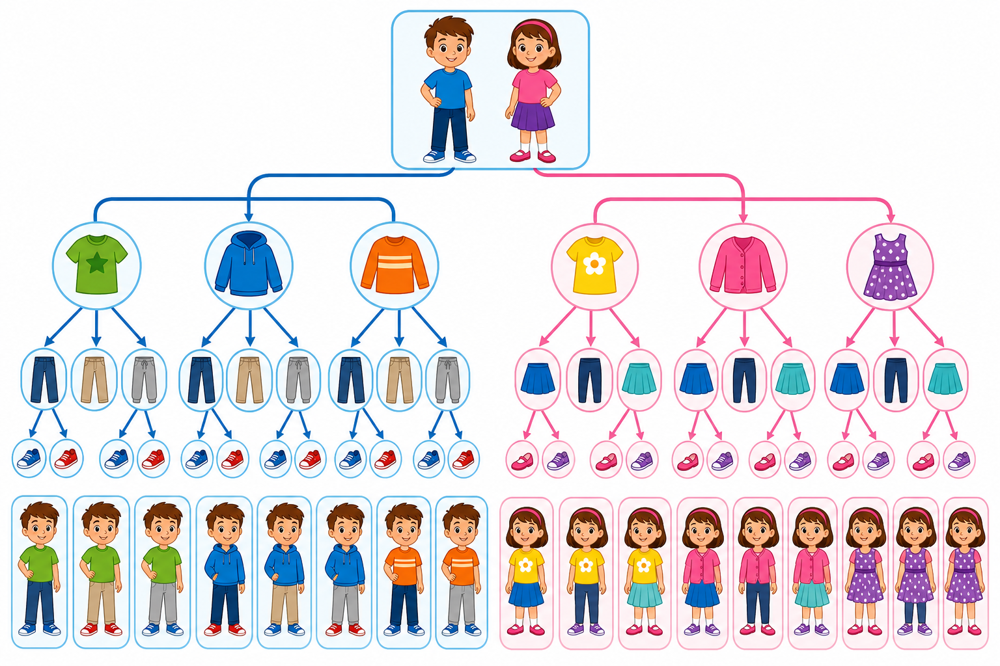

Co to jest? Що це?
Kombinatoryka liczy, ile jest sposobów wyboru lub ułożenia.
Комбінаторика рахує, скільки є способів вибору або впорядкування.
Jak w szkole? Як у школі?
Najpierw zrozum, czy kolejność ma znaczenie.
Спочатку зрозумій, чи порядок має значення.
Przykład z życia Приклад з життя
Ile strojów z 3 koszulek i 2 spodni? Liczysz sposoby — kombinatoryka.
Скільки образів із 3 футболок і 2 штанів? Рахуєш способи — комбінаторика.
ile sposobów?